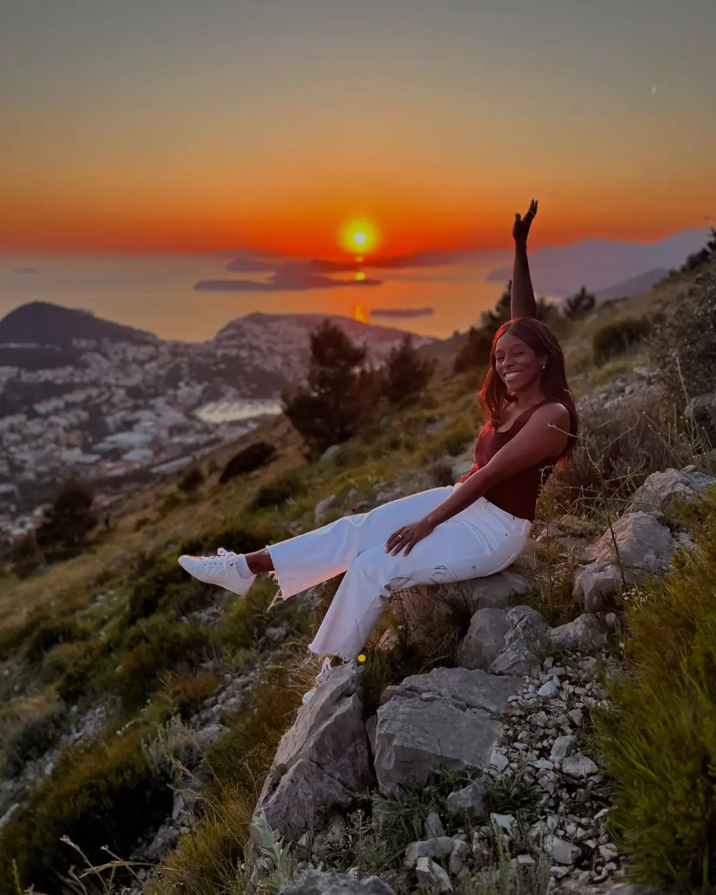
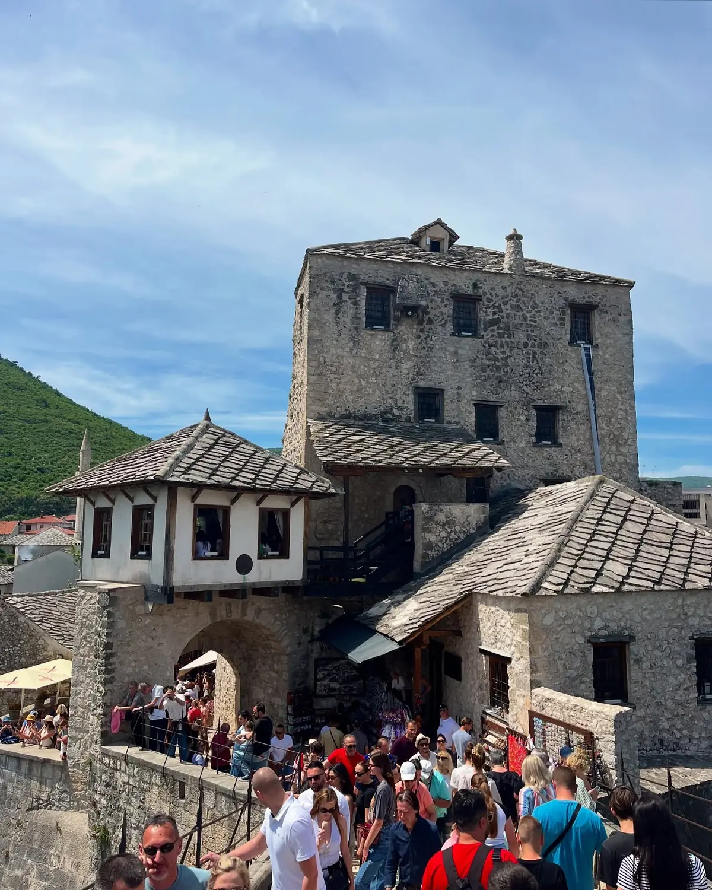

Dubrovnik · The highlight01
Sunset from Mount Srđ
📍 Mount Srđ · reached by the Dubrovnik cable car
This was the moment of the whole trip. Take the cable car up Mount Srđ (or drive the switchbacks) and you're rewarded with a sweeping view over the Old Town, the islands and the open Adriatic — and at golden hour it turns into one of the most incredible sunsets we've ever seen. Go up about an hour before sunset to get your spot, take it all in, and stay for the colours after the sun drops. There's a clip of it further down that still doesn't do it justice.
Take the cable carArrive before sunset